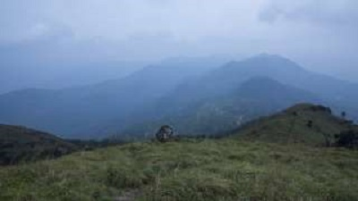
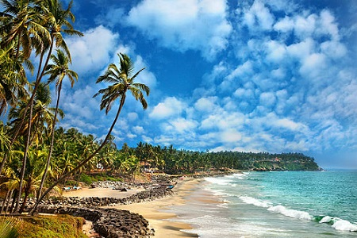

Ponmudi(the Golden Peak) also known as Kashmir of Kerala is a hill station in the Peringamala gramapanchayath of Trivandrum District of Kerala in India. It is located 22km west of Vithura town, 53 km north-east of Trivandrum City, 78 km south-east of Varkala town and 69 km north-east of Kovalam Beach at an altitude of 1,100 m (3,600 ft). Ponmudi (Varayadumotta) peak is a part of the Western Ghats mountain range that runs parallel to the Arabian Sea. Ponmudi is a popular honeymoon destination in South India.

Ponmudi

Varkala Beach
Varkala, a calm and quiet hamlet, lies on the outskirts of Thiruvananthapuram district. It has several tourist attractions that include a beautiful beach, a 2000-year-old Vishnu Temple and the Ashramam - Sivagiri Mutt a little distance from the beach. The Papanasam Beach (also called as Varkala Beach), which is ten kilometers away from Varkala, is renowned for a natural spring. Which is considered to have medicinal and curative properties. A dip in the holy waters at this beach is believed to purge the body of impurities and the soul of all sins; hence the name 'Papanasam Beach'.
The Sree Padmanabhaswamy Temple is a Hindu temple located in Thiruvananthapuram, capital of the state Kerala, India. The name of the city of 'Thiruvananthapuram' in Tamil and Malayalam translates to "The City of Lord Ananta", (The City Of Lord Vishnu). The temple is built in an intricate fusion of the Chera style and Dravidian style of architecture, featuring high walls, and a 16th-century gopura.While the Ananthapura temple in Kumbla in Kasaragod district in Kerala is considered as the original spiritual seat of the deity ("Moolasthanam"), architecturally to some extent, the temple is a replica of the Adikesava Perumal temple in Thiruvattar in Kanyakumari district in Tamil Nadu.